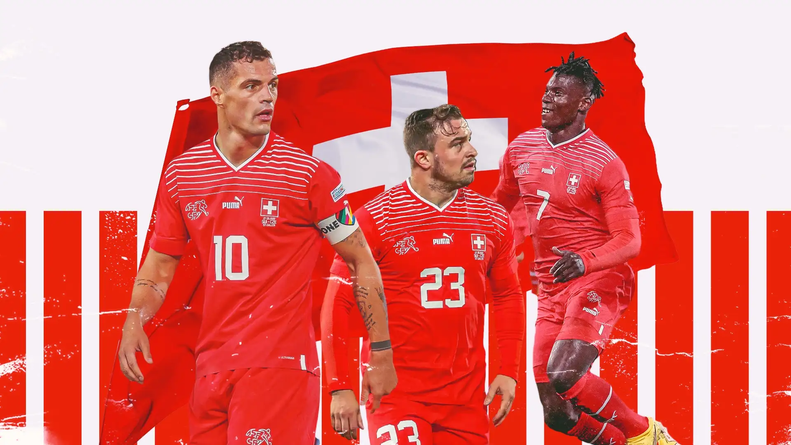

A Seleção da Suíça possui uma longa tradição em Copas do Mundo. Sua primeira participação aconteceu em 1934 e, desde então, o país se tornou presença frequente no torneio. Ao longo da história, a equipe conquistou campanhas sólidas e chegou três vezes às quartas de final, mostrando organização tática, disciplina e espírito competitivo contra algumas das maiores seleções do mundo.
A Suíça foi sede da Copa do Mundo de 1954, considerada uma das edições mais emocionantes da história. Além disso, o país é conhecido por revelar jogadores com diferentes origens culturais, refletindo a diversidade da população suíça. Outro destaque é a tradição defensiva da equipe, que frequentemente figura entre as seleções mais difíceis de serem derrotadas em competições internacionais.

Diversos atletas marcaram a história da seleção suíça. Entre eles estão Xherdan Shaqiri, conhecido pelos gols decisivos em Copas do Mundo; Granit Xhaka, referência no meio-campo e líder da equipe; Yann Sommer, um dos goleiros mais seguros da Europa; e Stephan Lichtsteiner, capitão durante muitos anos. Esses jogadores ajudaram a consolidar a Suíça como uma seleção competitiva no cenário internacional.